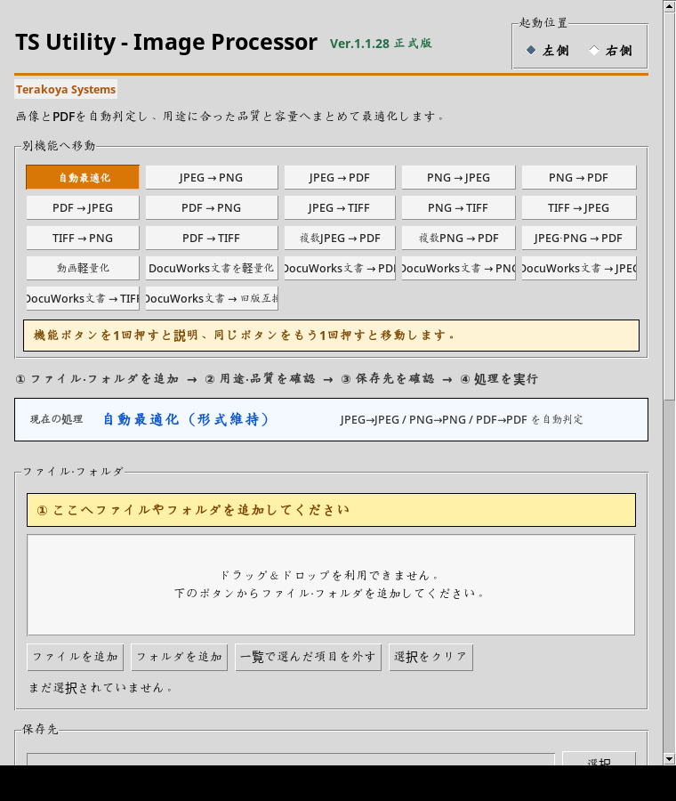
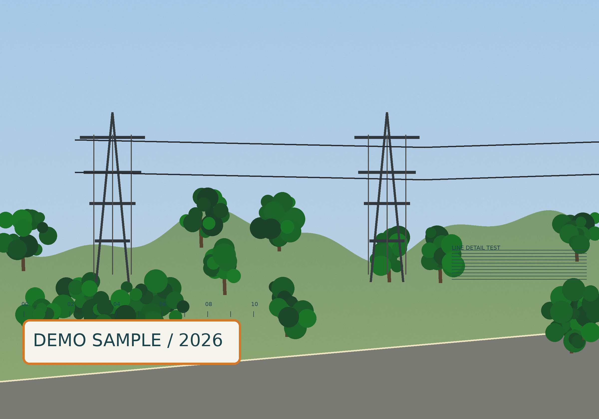
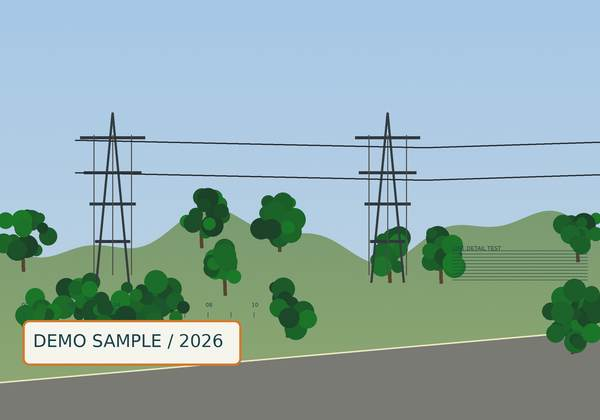
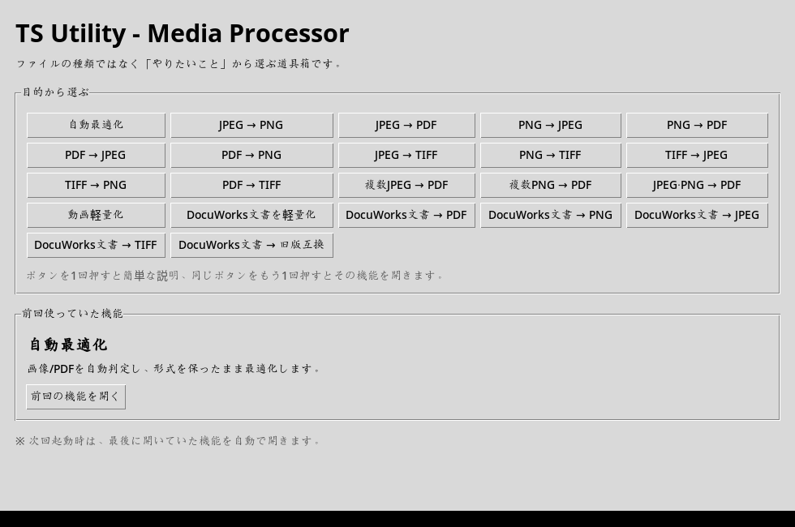

① 画像の印刷適性を判定
上で選んだ用途に連動。実際の quality_diagnosis.py の関数で事前生成した判定です。
人が用途を選ぶ→寸法・JPEG品質を適用→設定を評価
—
自動設定された解像度—
JPEG品質パラメータ—
—
—
※これは設定・解像度・圧縮率に基づく目安であり、画像をAIが目視鑑定した結果ではありません。画質を保証する数値ではありません。
現場写真や報告書の容量調整、形式変換。繰り返し作業を減らすため、実務から設計したWindows用ツールです。
このページは安全な展示用です。ブラウザで任意のファイルを処理・送信する機能はありません。

実際のPython/Tkinter画面を撮影（OSにより表示差があります）
以下は架空の風景画像を、本物のPythonソースコード（image_engine.py）で事前処理した結果。目的を変えると、出力ファイルと容量の違いを確認できます。
※本体の用途別プリセットを採用。ブラウザ上では事前生成済みのファイルを切り替えます。
元データ
—→変換後
——


変換前（元画像）変換後（軽量化）※元画像から強い粒状ノイズを減らし、細い線と小さな文字を加えた比較用サンプルです。縮小後は細部が失われる場合があります。画像内容で結果は変わります。
本体のAI診断と呼んでいる機能は、外部の生成AI APIではなく、Pythonが入力情報や設定をもとに判定するローカルルールです。評価の根拠を確認できるよう、デモでも内訳を見せています。
上で選んだ用途に連動。実際の quality_diagnosis.py の関数で事前生成した判定です。
—
※これは設定・解像度・圧縮率に基づく目安であり、画像をAIが目視鑑定した結果ではありません。画質を保証する数値ではありません。
pdf_optimization_diagnosis.py にある条件分岐を、架空の資料データで再現。PDFの実解析ではなく、判断基準を示すシミュレーションです。
—
写真・文字・図形の数を数えて閾値と比較します。実際のPython版はPDFの一部のページをサンプリングして判定します。
採用担当者に伝えたいのは「画像が軽くなる」だけではなく、操作の流れまで考えて作っていること。掲載画像は、受領したPythonコードをTkinterで実際に起動して撮影したものです。

JPEG/PDF変換、DocuWorks文書の軽量化、動画処理などを、目的別の入口から探せるように設計。
ファイル追加 → 用途・画質の選択 → 保存先の確認 → 実行。プレビューや診断機能も実装。
画面はLinux上の仮想ディスプレイで撮影したため、日本語フォント・ウィンドウ装飾などはWindows実機と異なる場合があります。DocuWorks連携はWindows専用のDocuWorks環境が必要です。
ファイル形式の知識を必要としない導線。選択した機能の説明を先に表示して、操作ミスを減らす。
feature_nav.py / media_processor.pyPillowを使ったリサイズ・画質設定・向きの補正。用途別にプリセット化して繰り返し設定を削減。
image_engine.py / processing_presets.pyPyMuPDFを使ったPDF処理と、DocuWorks専用APIを用いるWindows向け機能を実装。
conversion_engine.py / docuworks_engine.pyFFmpegを呼び出す軽量化エンジンと画質プリセット。動画部分は現在も試作・調整対象。
video_engine.py写真・図面・報告書が現場で大量に扱われると、ひとつの操作が少し面倒なだけでも積み重なって負担になります。ファイルを「処理する」だけでなく、作業する人が選択に迷わない操作、変換前後を確認できる安心感、処理結果を使える状態にすることを重視しました。
開発プロセスでは生成AIも補助的に活用し、要件整理・検証・改善を繰り返しています。
この展示はPythonの実行結果を静的に切り替える仕組みです。ブラウザ上でPythonを実行しているわけではありません。GitHubでは実際の画像・PDF処理モジュール、用途別プリセット、診断ロジック、テストを確認できます。Windowsアプリ全体は公開対象に含みません。
本番ファイルや個人情報をアップロードする必要はありません。JavaScript製の予約システム作品も見る ↗
左のボタンを切り替えて、容量の違いを見てみよう。